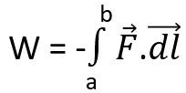
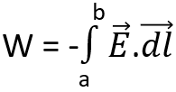
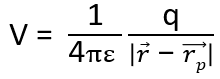
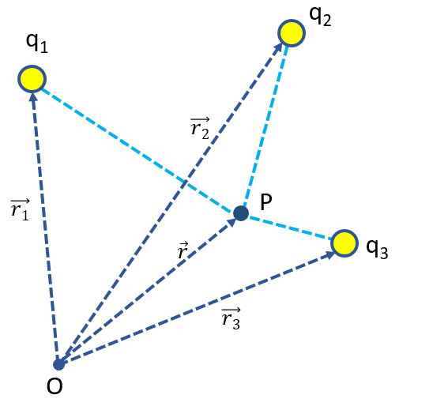
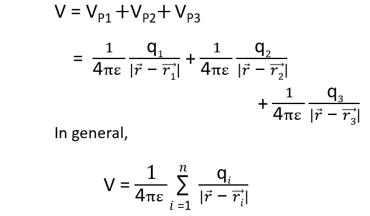
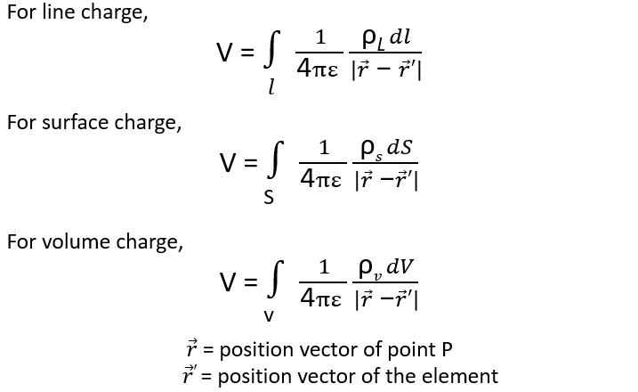

HOME BLOG EBOOKS ABOUT CONTACT SHOP
Consider 2 positive charges separated by a distance. In order to move any one of these charges close to the other, some external work has to be done, this is to overcome the repulsive force due to the first charge. On the contrary, had one of these charges been positive and the other negative, the charges would have pulled themselves closer without any external work. In that case, the charge is doing the work.
The work done in moving a charge from one point a to another point b in the presence of any coulombic forces acting on it can be obtained as,

We can generalize this equation further by considering the work done in moving a unit charge from a point to another. The work done in moving any other charge will simply be a scalar multiple of the work done in moving a unit charge, so this is fair generalization to make.

How did F turn into E all of a sudden? That’s because E is defined as the force acting on a unit charge.
This difference in the energy levels between 2 points in an Electric field that we have to overcome by doing work in order to move a charge is called the potential difference.
Electric field has an interesting property which we haven’t mentioned yet, Electric fields are conservative in nature, meaning the work done in moving charge from one point to another is independent of the path chosen. This implies that moving a charge from point A to B and then from point B to C is the same as directly moving the charge from point A to C. Why is this relevant to our discussion? If we use this idea and pick a common reference point like infinity, then we have a way to define the potential or the energy at a point in an Electric field. Hence the Electric potential(V) can be defined as the work done in moving a unit charge from infinity to a point against an Electric field.
The potential at a point P (rp) due to a point charge q located at r is given by,

The Electrical potential V is a scalar function and its unit is Volt.
In the presence of multiple charges, the potential at a point is the work done in moving a unit charge from infinity to the point in the presence of Electric field due to each of these charges. Electrical potential being a scalar quantity, we can simply sum up the potentials due to each charge individually.


For continuous charge distribution the potential at a point P can be obtained by summing up the contributions from individual differential charge elements.
